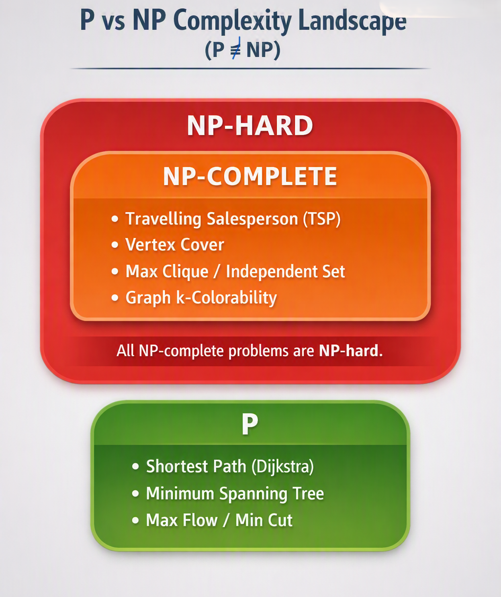

Chapter 9 NP-Completeness & Approximation Algorithms
9.1 Computational Complexity in Graph Theory
Graph problems vary significantly in computational difficulty. While some problems (like finding shortest paths or minimum spanning trees) can be solved efficiently in polynomial time, many fundamental graph decision problems are believed to be computationally intractable for large inputs.
9.1.1 Complexity Classes
Class P: The class of decision problems that can be solved by a deterministic algorithm in polynomial time (\(O(n^k)\) for some constant \(k\)).
Examples: Shortest path (Dijkstra’s), Minimum Spanning Tree (Kruskal’s/Prim’s), Max-Flow (Edmonds-Karp), Eulerian Tour detection.
Class NP: The class of decision problems for which a proposed solution (“certificate”) can be verified in polynomial time.
Examples: Hamiltonian Cycle, Graph Coloring, Clique Problem, Independent Set.
NP-Hard: A problem \(X\) is NP-hard if every problem in NP can be polynomial-time reduced to \(X\). \(X\) does not need to be in NP itself.
NP-Complete: A problem \(X\) is NP-complete if:
- \(X \in \text{NP}\), and
- \(X\) is NP-hard.
P vs. NP Complexity Landscape (If P != NP)
+-----------------------------------------+
| NP-Hard |
| +---------------------------------+ |
| | NP-Complete | |
| | - Travelling Salesperson (TSP) | |
| | - Vertex Cover | |
| | - Max Clique / Independent Set | |
| | - Graph k-Colorability | |
| +---------------------------------+ |
| | |
| | (Verifiable in P) |
| +---------------+-----------------+ |
| | P | |
| | - Shortest Path (Dijkstra) | |
| | - Minimum Spanning Tree | |
| | - Max Flow / Min Cut | |
| +---------------------------------+ |
+-----------------------------------------+

9.2 Canonical NP-Complete Graph Problems
Most proofs of NP-completeness rely on polynomial-time reductions (\(A \le_p B\)), showing that if a polynomial algorithm existed for problem \(B\), it could solve problem \(A\) in polynomial time as well.
9.2.1 Independent Set, Clique, and Vertex Cover
Three fundamental problems linked by simple dualities:
Definition 9.1
- Independent Set: Given \(G = (V, E)\) and integer \(k\), does \(G\) contain a set \(I \subseteq V\) of size \(\vert{}I\vert{} \ge k\) with no pairwise edges?
- Clique: Given \(G = (V, E)\) and integer \(k\), does \(G\) contain a subset \(C \subseteq V\) of size \(\vert{}C\vert{} \ge k\) where every pair of vertices is connected?
- Vertex Cover: Given \(G = (V, E)\) and integer \(k\), does \(G\) contain a subset \(S \subseteq V\) of size \(\vert{}S\vert{} \le k\) such that every edge \(e \in E\) has at least one endpoint in \(S\)?
\[ \textbf{Equivalence Duality} \]
\[\begin{array}{ccc} \text{Original Graph } G & & \text{Complement Graph } \overline{G} \\[6pt] \text{Independent Set } (I) & \Longleftrightarrow & \text{Clique } (C) \end{array}\]
\[\textbf{Complement Set} \] \[\begin{array}{ccc} \text{Independent Set } (I) & \Longleftrightarrow & \text{Vertex Cover } (V \setminus I) \end{array}\]
Theorem 9.1 (Structural Duality) For any graph \(G = (V, E)\) and subset \(S \subseteq V\):
- \(S\) is an Independent Set in \(G\) \(\iff\) \(S\) is a Clique in the complement graph \(\overline{G}\).
- \(S\) is an Independent Set in \(G\) \(\iff\) \(V \setminus S\) is a Vertex Cover in \(G\).
9.3 Approximation Algorithms for NP-Hard Problems
Because NP-hard problems are unlikely to have exact polynomial-time solutions (\(P \neq NP\)), we design approximation algorithms that run in polynomial time and guarantee a solution within a bounded factor of the optimal value.
9.3.1 Approximation Ratio (\(\alpha\))
An algorithm has an approximation ratio \(\alpha\) if for all input instances:
\[\max \left( \frac{C}{\text{OPT}}, \frac{\text{OPT}}{C} \right) \le \alpha\]
(where \(C\) is the cost of the algorithm’s solution and \(\text{OPT}\) is the optimal cost).
9.3.2 2-Approximation for Minimum Vertex Cover
A greedy strategy of repeatedly picking the highest-degree vertex fails to achieve a constant approximation bound. However, a simple edge-matching heuristic guarantees a 2-approximation.
9.3.2.1 Algorithm Steps
- Initialize vertex cover \(C = \emptyset\).
- Initialize edge set \(E' = E\).
- While \(E'\) is not empty:
- Pick an arbitrary edge \((u, v) \in E'\).
- Add both endpoints \(u\) and \(v\) to \(C\).
- Remove all edges incident to either \(u\) or \(v\) from \(E'\).
- Return \(C\).
Edge-Matching 2-Approximation
Selected Edge (u, v) Incident Edges Removed
(u)=====(v) (u)=====(v)
/ \ / \ . . . .
(a) (b) (c) (d) (a) (b) (c) (d)
Theorem 9.2 The algorithm runs in \(O(V + E)\) time and returns a vertex cover \(C\) such that \(\vert{}C\vert{} \le 2 \cdot \vert{}\text{OPT}\vert{}\).
Proof. Let \(M \subseteq E\) be the set of edges selected in step 3. No two edges in \(M\) share a vertex (they form a matching). To cover the edges in \(M\), any valid vertex cover \(\text{OPT}\) must pick at least one vertex per matching edge:
\[\vert{}\text{OPT}\vert{} \ge \vert{}M\vert{}\]
Since our algorithm adds both endpoints for every edge in \(M\):
\[\vert{}C\vert{} = 2\vert{}M\vert{} \le 2 \cdot \vert{}\text{OPT}\vert{}\]
9.3.3 2. Metric Travelling Salesperson Problem (Metric TSP)
Given a complete graph with edge weights representing distances, find a Hamiltonian cycle of minimum total weight.
- General TSP: Inapproximable within any constant factor unless \(P = NP\).
- Metric TSP: Edge weights satisfy the triangle inequality (\(w(u, v) \le w(u, w) + w(w, v)\)).
9.3.3.1 2-Approximation via Minimum Spanning Tree (MST)
- Compute a Minimum Spanning Tree \(T\) of \(G\) using Kruskal’s or Prim’s algorithm (\(w(T) \le \text{OPT}\)).
- Duplicate every edge of \(T\) to form an Eulerian multigraph.
- Construct an Eulerian tour of this multigraph.
- Convert the Eulerian tour into a Hamiltonian cycle by taking shortcuts (bypassing previously visited vertices).
Metric TSP Shortcuts
Eulerian Walk with Repeats Shortcut Cycle (Triangle Inequality)
(1)---(2) (1)---(2)
| / | | |
| / | ======> | |
(3)---(4) (3)---(4)
Traverses (2) twice Direct edge (1,3) <= (1,2) + (2,3)
By the triangle inequality, shortcuts never increase total weight. Thus:
\[w(C) \le 2 \cdot w(T) \le 2 \cdot \text{OPT}\]
(Note: Christofides’ Algorithm improves this bound to a 1.5-approximation by combining the MST with a minimum-weight perfect matching on odd-degree vertices.)
9.4 Chapter 9 Summary Table
| Problem | Exact Complexity | Approximation Ratio (\(\alpha\)) | Algorithmic Method |
|---|---|---|---|
| Vertex Cover | NP-Complete | \(2.0\) | Maximal Edge Matching |
| Metric TSP | NP-Hard | \(2.0\) (MST) / \(1.5\) (Christofides) | MST + Eulerian Tour + Shortcuts |
| General TSP | NP-Hard | No constant \(\alpha\) (Unless \(P=NP\)) | Reductions from Hamiltonian Cycle |
| \(k\)-Colorability (\(k \ge 3\)) | NP-Complete | \(O(n(\log \log n)^2 / (\log n)^3)\) | Semi-definite programming / Greedy |
9.5 Chapter 9 Exercises
- Vertex Cover Duality: Given a graph \(G\) with \(\vert{}V\vert{} = 10\) and a maximum independent set of size \(6\), what is the exact size of the minimum vertex cover?
- 2-Approximation Execution: Trace the 2-approximation vertex cover algorithm on a path graph \(P_5\). Does it achieve the exact optimal cover or an upper bound?
- Triangle Inequality: Show why the 2-approximation for Metric TSP fails if edge weights do not satisfy the triangle inequality \(w(u, v) \le w(u, w) + w(w, v)\).
- Complexity Classification: Classify the following problems as \(P\) or \(NP\text{-Complete}\):
- Finding if a graph has a cycle of length 3.
- Finding if a graph has a simple path visiting all vertices.
- Finding the maximum flow between source \(s\) and sink \(t\).